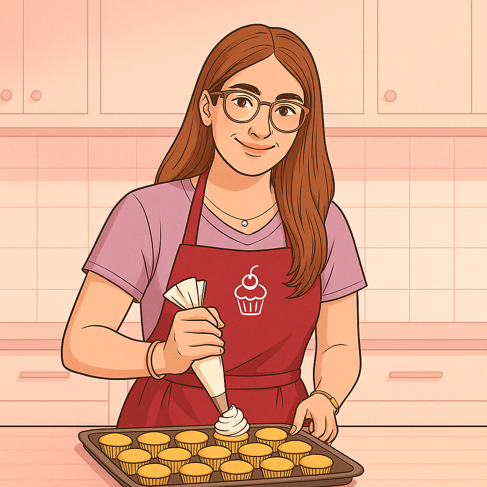

Über mich
Hey! Ich bin Emma – die Person hinter Emma’s Cupcakes. Ich liebe alles, was mit Teig, Ofen und ein bisschen Chaos in der Küche zu tun hat. Wenn ich nicht gerade mit dem Spritzbeutel kämpfe, probiere ich neue Geschmäcker aus und versuche, klassische Rezepte mit modernen Ideen zu verbinden (Team „Vanille trifft Himbeere“ ).
Auf dieser Seite teile ich einfache, ehrliche Rezepte mit dir – hübsch, aber machbar. Ich mag klare Anleitungen, kleine Tricks und Zutaten, die man wirklich bekommt. Und ja, ich verfeinere gern… bis der Cupcake genau so schmeckt, wie ich ihn im Kopf habe.

Warum ich so gern backe
Ich mag Dinge, die man Schritt für Schritt aufbaut: Ein bisschen Mehl, ein paar Eier, Geduld – und plötzlich ist da etwas Warmes, Duftendes, das man teilen kann. Backen ist für mich eine Mischung aus Tüfteln (Hallo Grammwaage), kreativem Basteln (Deko!) und einem kleinen Wissenschaftsprojekt (Ofen, tu bitte, was ich denke).
Cupcakes sind meine Favoriten, weil sie wie kleine Projekte sind: Teig, Füllung, Topping – alles lässt sich anpassen. Außerdem sind sie perfekt zum Verschenken. Meine Rezepte hier sollen hübsch aussehen, aber vor allem funktionieren. Wenn dich etwas inspiriert: nimm’s mit, verändere es, und backe es auf deine Art nach.